Genuine 2 F Duval type stamps
France taxe
Return To Catalogue - France Postage Due Stamps, 1881 Fournier forgeries, first type - France Postage Due Stamps, 1881 other forgeries - France Postage Due Stamps, 1881 - French colonies, postage due stamps, forgeries - French colonies, postage due stamps - French colonies, postage due stamps, Fournier forgeries
Note: on my website many of the
pictures can not be seen! They are of course present in the
catalogue;
contact me if you want to purchase it.
France Postage Due Stamps,
1881 issue
France Postage Due Stamps, 1881 other
forgeries
France Postage Due Stamps, 1881 Fournier
forgeries, first type
French colonies, postage due stamps,
Fournier forgeries
Genuine 2 F Duval type stamps
The perforation on these stamps is wrong, I suspect them to be
reperforated French Colonies stamps.
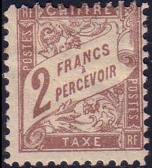
Forged 2 F stamps with wrong perforation gauge. Also an
imperforate stamp from the same source
On the left a partial forgery, made from a genuine 2 c stamp
(second image) by scratching out the word "CENTIMES"
and replacing it by "FRANCS". In the genuine 2 F stamps
(third image), the word "PERCEVOIR" is placed further
to the left. The "A" is not placed exactly on top of
the second "E" of "PERCEVOIR" in the genuine
stamps.
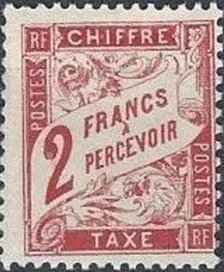
In these forgeries, the "F" of "FRANCS" and
the "P" of "PERCEVOIR" are vertically
aligned.
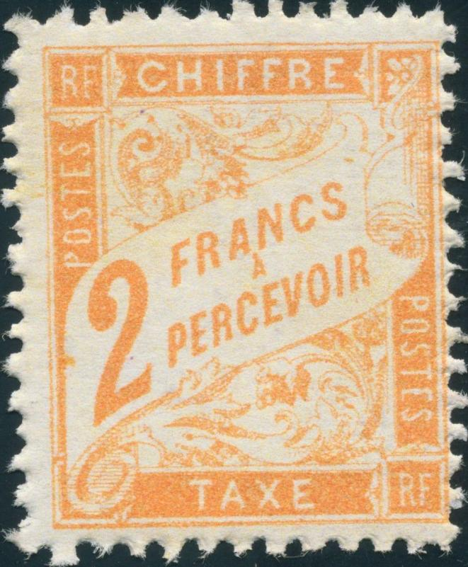
2 F forgeries with the second "R" of
"PERCEVOIR" too close to the scroll besides it. These
forgeries are all printed on rough paper.
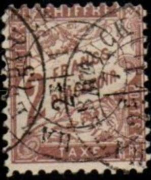 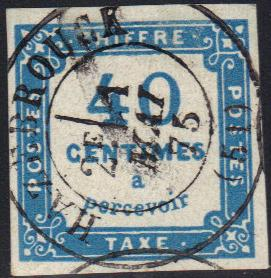
A forgery with a "HAZEBROUCK 2E 1 MAI 75 (51)" cancel.
The perforation is wrong. The same cancel appears on a 40 c
forgery of the previous issue. The 2 F stamp which was only
issued in 1884!
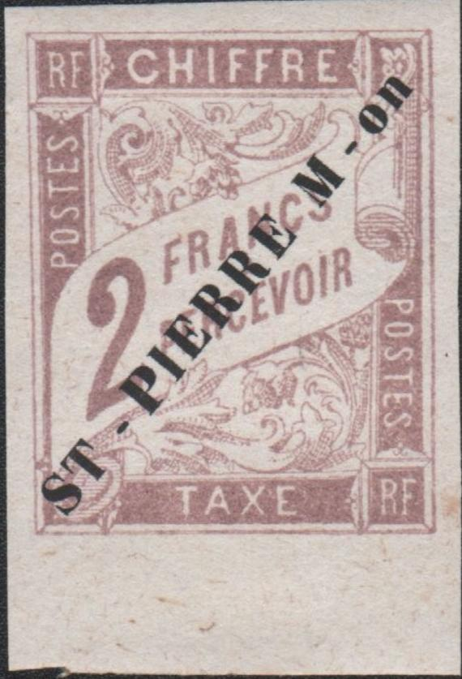 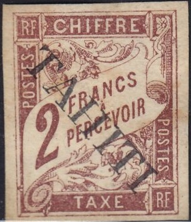
Forgeries made by the same forger? The first stamp might have a
"NANTUA 3E/15 JUIL 82 AIN" cancel that also appears in
the Fournier Album.
This pair of 2 F forgeries has the "2" situated in
different locations. On the left stamp, the "2" is
placed too far to the right. The perforated 2 F brown stamps
appear to be too high (compare it to the genuine 1 F stamp next
to it).
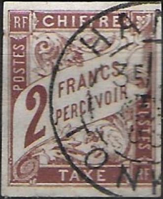 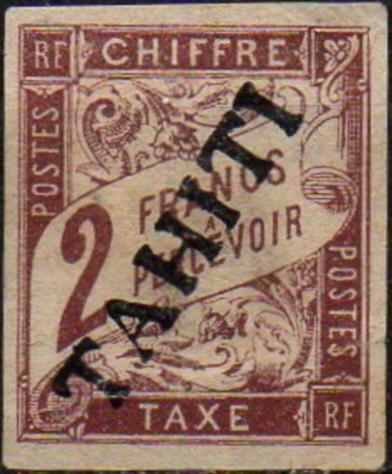 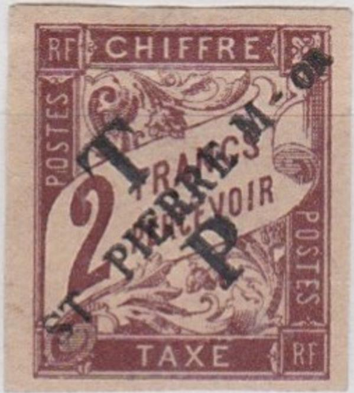
A forgery with a "HANOI 3E/27 FEVR 86 TONKIN" cancel as
can be found in the Fournier Album. The "2" is placed
too far to the right and the second "R" of
"PERCEVOIR" is also too close to the ornaments besides
it. Also the same forgery with a forged "TAHITI" and
"ST.PIERRE M-on" overprints. I'm not sure if the 2 F
black forgeries are from the same source, the "C" of
"PERCEVOIR" is also too narrow, but the left hand
bottom side of the "2" appears a bit sharper. The
"C" of "FRANCS" appears too rounded.
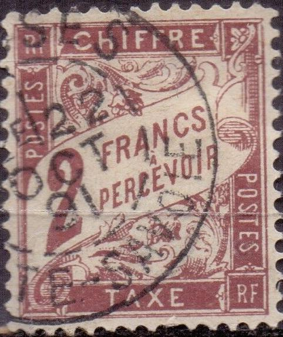
2 F Fournier forgery with a "CLUSES 2E/22 OCT 91
HAUTE-SAVOIE" forged cancel and another with most likely a
forged "SALVIAC 7E/10 NOV 91 LOT" cancel.
2 F different forgery type with a "CLUSES 2E/22 OCT 91
HAUTE-SAVOIE" forged cancel
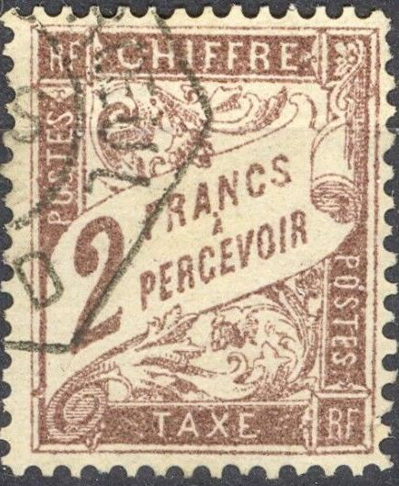
A forged "MONS-EN-BAROEUL 16 MARS 89 NORD" cancel on
Fournier forgeries.
This forgery has the accent on the "A" too far from the
"A" of "FRANCS". In my opinion, there is a
small black spot in the flower ornaments to the right of the
second "S" of the left "POSTES".
Highly dubious block of four 2 F French Colonies due stamps.
Not sure what to think about this, 2 F stamp with wrong
perforation and "PARIS DISTRIBUTION" cancel. The first
stamp (with correct perforation?) has a certificate of
genuineness. The first two stamps even have the same date
"?/15 MARS 94".
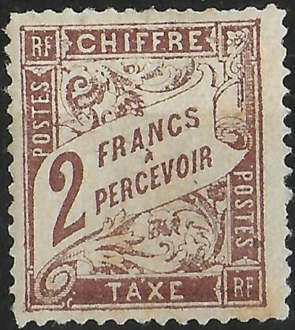
Fournier forgeries: The bottom of the "S" of
"FRANCS" is badly done (exists in black and brown). The
first "S" of the left "POSTES" has a missing
lower curl. The printing of these forgeries is quite bad. See
also France Postage Due Stamps, 1881
Fournier forgeries, first type or French
colonies, postage due stamps, Fournier forgeries, first type
Primitive 2 F black forgery.
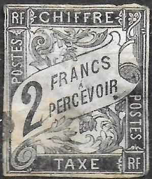
2 F black, imperforate. Possibly some kind of a cut from an
illustration?
A computer generated forgery or some kind of reproduction (note
the dots when zoomed in). It looks like the stamp from which this
was made was already a forgery.
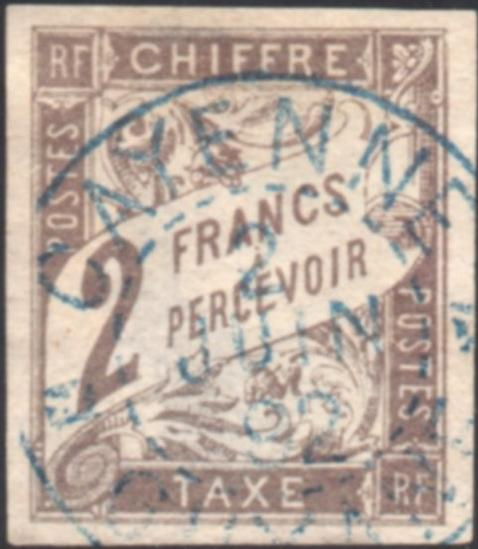
2 F French colonies forged stamp with a "CAYENNE 2 JUIN 92
GUYANE" forged cancel
A 2 F black forger with the "2" placed too high and the
second "R" of "PERCEVOIR" too far to the
left.
Another forgery with the "2" too high.
{kind=link}
{kind=link}
{kind=link}
{kind=link}
{kind=link}
{kind=link}
{kind=link}
{kind=link}
{kind=link}
{kind=link}
{kind=link}
{kind=link}
{kind=link}
{kind=link}
{kind=link}